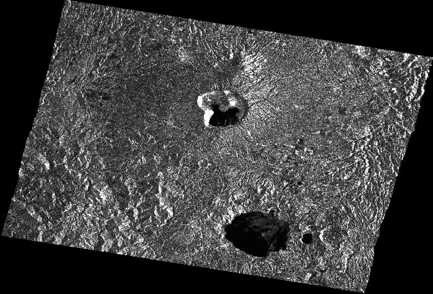
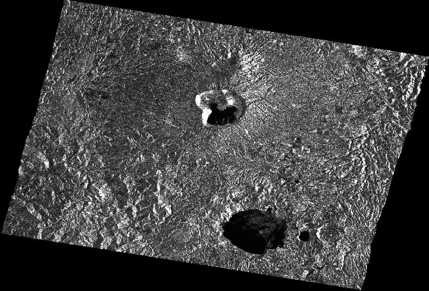

| Orthorectification Tutorial | |
The Terrain Correction
Operator will
produce an orthorectified product in the WGS 84 geogreaphic
coordinates. The Range Doppler
orthorectification method [1] is implemented for geocoding SAR images from a single 2D
raster radar geometry. It uses available orbit
state
vector information in the metadata or external
precise orbit, the radar timing annotations, the slant to ground range
conversion parameters together with the reference DEM data to derive the precise
geolocation information. Optionally radiometric normalisation can be applied to the
orthorectified image to produce σ0, γ0 or β0
output.
The Ellipsoid Correction RD and Ellipsoid Correction GG Operators will produce ellipsoid corrected products in the WGS 84 geographic coordinates. The Terrain Correction Operator should be used whenever DEM is available. The Ellipsoid Correction (RD and GG) should be used only when DEM is not available.
The Range Doppler Terrain Correction Operator implements the Range Doppler orthorectification method [1] for geocoding SAR images from a single 2D raster radar geometry. It uses available orbit state vector information in the metadata or external precise orbit, the radar timing annotations, the slant to ground range conversion parameters together with the reference DEM data to derive the precise geolocation information.
Right now only the DEMs with geographic coordinates (Pא, Pא, Ph) referred to global geodetic ellipsoid reference WGS84 in meters are properly supported by NEXT.
By default the following DEMs are available:
Since the height information in ACE and SRTM is referred to geoid EGM96, not WGS84 ellipsoid, correction has been applied to obtain height relative to the WGS84 ellipsoid.
User can also use external DEM file which, as specified above, must be WGS84 (Pא , Pא, Ph) DEM in meters.
User now can specify pixel spacing for the orthorectified image. The pixel spacing can be entered in both meters and degrees. If the pixel spacing in one unit is entered, then the pixel spacing in another unit is computed automatically. The calculations of the pixel spacing in meters and in degrees are given by the following equations:
pixelSpacingInDegree = pixelSpacingInMeter / EquatorialEarthRadius * 180 / PI;
pixelSpacingInMeter = pixelSpacingInDegree * PolarEarthRadius * PI / 180;
where EquatorialEarthRadius = 6378137.0 m and PolarEarthRadius = 6356752.314245 m as given in WGS84.
Right now the following projections are supported by NEXT:
This operator also implements the radiometric normalization and output σ0, γ0 and β0. Basically all the correction factors, such as antenna pattern gain and range spreading loss, applied to the original SAR image are removed first. Then new factors together with constant and incidence angle correction factors are applied during the orthorectification process.
It should be noted that this radiometric normalization and terrain correction process is not equivalent to apply Terrain Correction operator to a calibrated product. This is because the radiometric normalization implemented by this operator computes correction factors based on accurate geometric information, for example the local incidence angle is computed using local DEM.
As for the correction factors applied to each type of product, the radiometric normalization implemented in this operator agrees with that in Calibration operator. Reader is referred to Calibration operator for details.
It should also be noted that the radiometric normalization can be applied to ASAR standard slant range products (IMS, APS) and ASAR ground range imageries (IMP, APP, IMM, APM, WSM), but cannot be applied directly to ERS product. This is because the Analogue to Digital Converter (ADC) power less correction for ERS product is more convenient to be applied to the SAR image rather than the orthorectified image.
To apply radiometric normalization and terrain correction for ERS (or ASAR product), user can use one of the following user graphs:
When 'RemoveAntPat_SARSim_GCPSelection' or 'RemoveAntPat_Multilook_SARSim_GCPSelection' is used, it should be used together with SARSim Terrain Correction operator, i.e. SARSim Terrain Correction operator should be applied to the graph output in the Graph Builder.
In the above user graphs, Remove Antenna Pattern operator is employed to remove antenna pattern and other correction factors applied to the SAR image. For details of the Remove Antenna Pattern operator, the reader is referred to Remove Antenna Pattern Operator.
Note also that among σ0, γ0 and β0 bands output in the target product, only σ0 is real band while γ0 and β0 are virtual bands expressed in terms of σ0 and incidence angle. Therefore, σ0 and incidence angle are automatically saved and output if γ0 or β0 is selected.
For σ0 and γ0 calculation, user can select using projected local incidence angle (local incidence angle projected onto range plane) or incidence angle from ellipsoid (incidence angle from tie points of the source product).
For all ASAR products, β0 is given as the follows:


Below
are some sample images showing the Terrain Correction result of an ASAR
IMS product
ASA_IMS_1PNUPA20081003_092731_000000162072_00351_34473_2366.N1,
acquired on October 3, 2008, imaging the area around Rome in
Central Italy.
The ASAR IMS image has been multi-looked with 2 Range looks and 10 Azimuth Looks before to be orthorectified.
The
DEM employed is the SRTM 3 second Version 4 and since the SRTM height
information is referred to geoid EGM96, not WGS84 ellipsoid, correction
has been applied to obtain height relative to the WGS84 ellipsoid (this
is done automatically)
Figure 2 is in the original SAR geometry after multi-looking 2-10.
The orthorectified image and its radiometric normalised image σ0 are shown in Figure 3 and Figure 4 respectively.
Figures 5 and 6 are a zoom of the figure 3 and 4.
The radiometric scale is in dB/m^2.
 


After Terrain Correction your SAR data will be closer to the real world geometry and you will be able to overlay layers from other sources correctly.